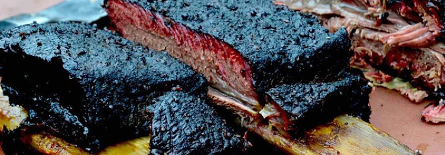

Catering
The Catering at this festival is going to be done by one amazing group.
MAN~MEAT~FIRE
They are a group with members from all over the country and together they plan to bring you the most delicious and heart warming sould BBQ food that will ever pass your lips. Their beautiful hand crafted smoker will cook your food over the raw flames of passion and leave a beautiful melt in your mouth meat with their signature dish being the beef rib. This is 'on the bone' meat that looks like its from the prehistoric ages one of the biggest cuts of meat i have ever had the pleasure of laying my eyes on. If you are animal enough try and get through that, smoked sausage, spicy jalepeno wings and belly pork all served with chips and coleslaw on their sharing platter challenge you will get a picture on their twitter with Head Chefs Tony Smith and Gareth Hardman. Good Luck.
